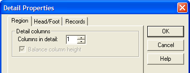
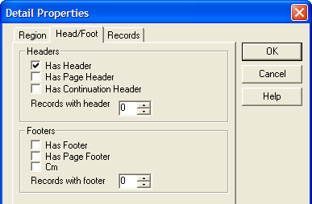
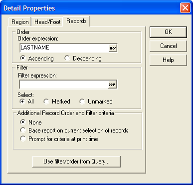

Detail Properties
|
Item |
Description |
|
Columns in Detail |
Overrides the group and report level settings for number of columns. |
|
Balance column height |
Whether to balance column heights when the layout has more than one column. |

|
Item |
Description |
|
Has Header |
Overrides the report Header setting for this section. |
|
Has Page Header |
Overrides the report Page Header setting for this section. |
|
Has Continuation Header |
Overrides the report Continuation Header setting for this section. |
|
Records with Header |
Sets the minimum number of records that need to appear below the Header. |
|
Has Footer |
Overrides the report Footer setting for this section. |
|
Has Page Footer |
Overrides the report Page Footer setting for this section. |
|
Has Continuation Footer |
Overrides the report Continuation Footer setting for this section. |
|
Records with Footer |
Sets the minimum number of records that need to appear above the Footer. |

|
Item |
Description |
|
Order Expression |
An expression that orders the records in the current detail section. |
|
Ascending Descending |
Indicates whether to sort records in ascending or descending order. |
|
Filter Expression |
An expression that selects the records for the current detail section. |
|
Select |
An additional selection criterion that picks: "All", "Marked", or "Unmarked" records. |
|
Base report on current selection of records |
The contents of the detail section will be based on the filter and order expressions that you have specified. |
|
Prompt for criteria at print time |
Alpha Five will display a genie at print time, letting you select a primary index, starting and ending key value, and other options. The criteria that you specify at print time are in addition to any criteria that you may have entered in the Filter expression and Order expression boxes. |
|
Use filter/order from Query |
The contents of the detail section will be based on the filter and order expressions specified by a query. |

See Also
Report Properties, Report Group Properties, Report Region Properties